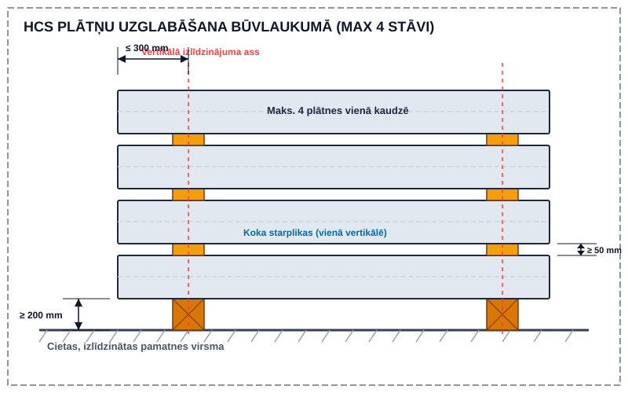
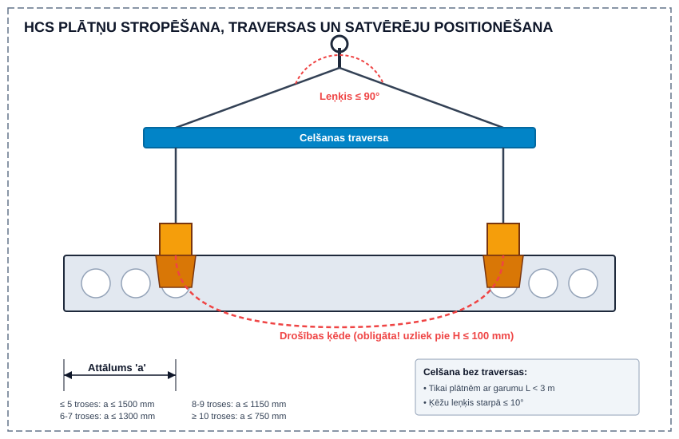
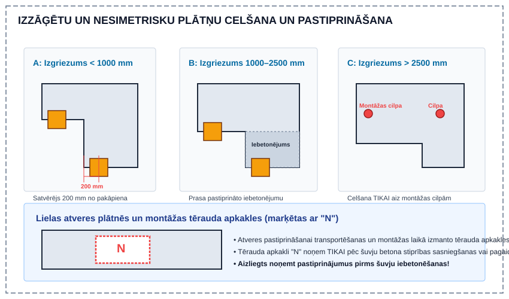
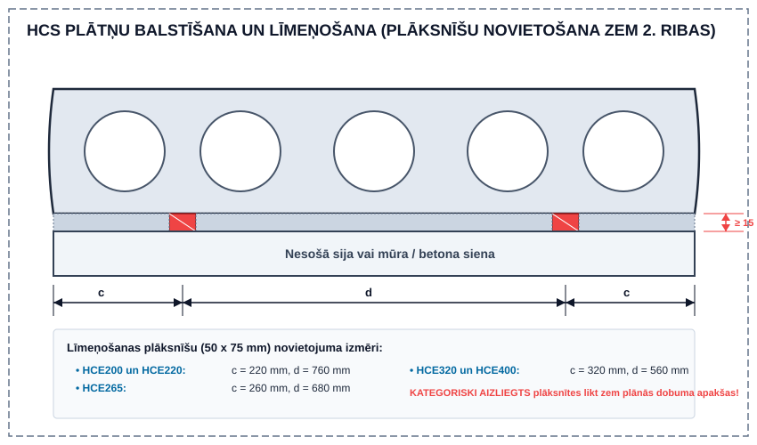
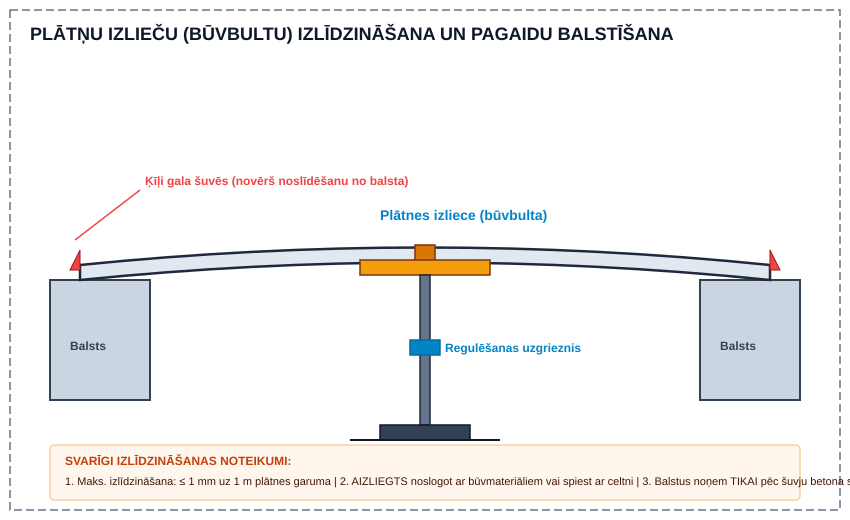
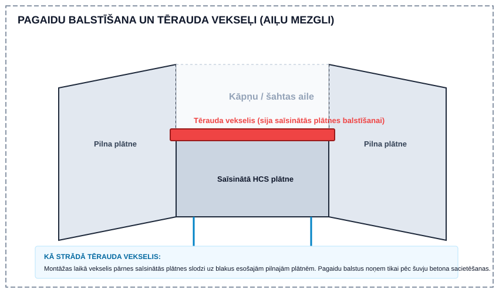

Dobumoto plātņu (HCS) montāža un konstruktīvie nosacījumi
Saliekamā dzelzsbetona dobumoto plātņu (HCS — Hollow Core Extruder) izmantošana ēku pārsegumos nodrošina augstu būvdarbu ātrumu un lielu nestspēju. Lai garantētu konstrukciju drošību, ilgmūžību un atbilstību normatīviem, montāžas procesā stingri jāievēro transportēšanas, uzglabāšanas, stropēšanas, līmeņošanas, šuvju betonēšanas un komunikāciju iestrādes nosacījumi.
1. HCS plātņu tipi, marķēšana un kvalitātes kontrole
Dobumotās plātnes tiek projektētas un ražotas saskaņā ar standartu LVS EN 1168 (Saliekamā dzelzsbetona izstrādājumi. Dobumotās plātnes) un ražotņu kvalitātes vadības sistēmām (ISO 9001, ISO 14001).
Tipveida plātņu raksturlielumi:
| Plātnes tips | Biezums $h$ (mm) | Ugunsizturības klase | Plātnes pašsvars ($\text{kg/m}^2$) | Svars ar aizpildītām šuvēm ($\text{kg/m}^2$) |
|---|---|---|---|---|
| HCE200 | 200 | $\le \text{R60}$ | 250 | 265 |
| HCE220 | 220 | $\le \text{R90}$ | 317 | 340 |
| HCE265 | 265 | $\le \text{R120}^*$ | 360 | 380 |
| HCE320 | 320 | $\le \text{R120}^*$ | 385 | 405 |
| HCE400 | 400 | $\le \text{R120}^*$ | 435 | 465 |
*Ugunsizturības klasēm $\ge \text{R120}$ jāveic papildu šķērsspēka un enkurojuma pārbaude ugunsgrēka apstākļos saskaņā ar LVS EN 1168 G pielikumu.
Elementu marķējums un koda atšifrēšana:
Katrs elements rūpnīcā tiek marķēts ar identifikācijas uzlīmi/sildzi. Elemenda marķējuma kods satur:
- Plātnes tipu (piem. HCE220 vai HCE265K konsolēm);
- Saspriegto trošu skaitu un diametru (piem. $5 \times \emptyset 9.3\text{ mm}$ vai $4\times / 8-$ augšā un apakšā);
- Pozīcijas numuru projektā.
Piemērs: HCE220-5x-101 — HCE220 plātne ar 5 trosēm $\emptyset 9.3\text{ mm}$ apakšējā joslā, pozīcija 101.
[!IMPORTANT] Saspriegto trošu ieslīdēšanas (libisemine) pielaides: Pēc plātņu atspriegošanas rūpnīcā un piegādes būvlaukumā jāpārbauda saspriegto trošu ieslīdējums betona masīvā no plātnes gala plaknes. Pielaujamās robežvērtības:
- $\emptyset 9.3\text{ mm}$ trosēm: maks. $2.0\text{ mm}$
- $\emptyset 12.5\text{ mm}$ trosēm: maks. $3.0\text{ mm}$
Troses, kuru ieslīdēšana pārsniedz robežvērtības, bet kuras rūpnīcā pārbaudītas un atzītas par derīgām, tiek atzīmētas ar krāsas marķējumu uz galaplaknes. Par nebūtiskām/neatzīmētām trošu ieslīdēšanām pirms montāžas nekavējoties jāinformē ražotājs.
2. Transportēšana, loģistika un uzglabāšana būvlaukumā
Piegādes plānošana un saņemšana:
- Grafiku iesniegšana: Vispārējo piegādes grafiku būvlaukumam iesniedz vismaz 2 nedēļas pirms montāžas sākuma, savukārt stundu precizitātes piegādes grafiku — ne vēlāk kā 3 darbdienas pirms piegādes.
- Piekļuve un autotransports: Būvlaukumā jānodrošina piebraucamie ceļi $16.5\text{ m}$ gariem un $40\text{ t}$ smagiem plātņu autovilkējiem. Maksimalā vienas kravas masa ir līdz $24\text{ t}$.
- Kravas izkraušana: Normatīvais kravas izkraušanas laiks būvlaukumā ir 1 stunda no autotransporta ierašanās brīža.
Starpuzglabāšana būvlaukumā (Vaheladustamine):
Ja plātnes netiek montētas tieši no transportlīdzekļa, tās novieto starpuzglabāšanā ievērojot šādus noteikumus:
- Plātnes novieto uz cietas, līzenas un horizontālas pamatnes.
- Koka paliktņus un starplikas novieto gareniski precīzi vienā vertikālā līnijā.
- Starpliku maksimālais attālums no plātnes gala ir $300\text{ mm}$.
- Apakšējās plātnes brīvajam attālumam virs zemes jābūt vismaz $200\text{ mm}$ (lai novērstu saskari ar mitru grunti un nodrošinātu stropēšanas brīvību).
- Starpliku biezumam jābūt vismaz $50\text{ mm}$.
- Vienā kaudzē (statnē) drīkst novietot ne vairāk kā 4 plātnes.

[!CAUTION] Ziemas apstākļos kategoriski aizliegts ar celtni vai traversu raut vaļā starpuzglabāšanā sasalušas dobumotās plātnes!
3. HCS plātņu celšanas un stropēšanas tehnoloģijas
Plātņu pacelšanai un pārvietošanai izmanto specializētas celšanas iekārtas: satvērējus (haarats), traversas, celšanas ķēdes un stropes.
Celšanas traversas un leņķi:
- Celšana bez traversas: Pieļaujama TIKAI plātnēm ar garumu $L < 3\text{ m}$, nodrošinot, ka ķēžu leņķis starpā nepārsniedz $10^\circ$.
- Celšana ar traversu: Izmanto teleskopiskās vai fiksētās traversas. Maksimalais pieļaujamais ķēžu leņķis virs traversas ir $90^\circ$.
Satvērēju (haarats) pozicionēšana:
Satvērējus novieto pēc iespējas tuvāk plātnes galam. Pieļaujamais satvērēja attālums $a$ no plātnes gala ir atkarīgs no saspriegto trošu skaits plātnes apakšējā joslā:
| Trošu skaits apakšējā joslā (gab.) | Maks. satvērēja attālums no gala $a$ (mm) | Minimālais attālums no gala $a_{\min}$ (mm) |
|---|---|---|
| $\le 5$ | 1500 | 200 |
| 6 vai 7 | 1300 | 200 |
| 8 vai 9 | 1150 | 200 |
| $\ge 10$ | 750 | 200 |
Smagajām plātnēm (HCE400) ar garumu $L > 11\text{ m}$ celšanai obligāti izmanto 4 satvērējus.
[!WARNING] Drošības ķēžu (ohutuskett) lietošana: Celšanas laikā OBLIGĀTI jāizmanto satvērēju drošības ķēde. Drošības ķēdi apliek ap plātni tūlīt pēc tam, kad plātne pacelta līdz $100\text{ mm}$ virs pamatnes/kravas kastes. Ķēdi noņem tikai tad, kad plātne nolaista līdz $100\text{ mm}$ virs balsta virsmas. Drošības ķēdes izmantot plātnes pacelšanai un celšanai ir KATEGORISKI AIZLIEGTS!

Izzāģētu un nesimetrisku plātņu celšana:
Ja plātnei ir gareniski vai šķērseniski izgriezumi, celšanas veidu nosaka izgriezuma garums:
- Šaurākā daļa $< 1000\text{ mm}$: Satvērēju novieto $200\text{ mm}$ no pakāpiena malas.
- Šaurākā daļa $1000 \dots 2500\text{ mm}$ ar pastiprināto iebetonējumu: Satvērēju novieto $200\text{ mm}$ no pakāpiena malas.
- Šaurākā daļa $> 2500\text{ mm}$: Celšana atļauta TIKAI aiz montāžas cilpām, kas iestrādātas plātnes galos ražotnē.
- Lielas atveres plātnēs un tērauda apkakles (marķētas ar "N"): Plātnēm ar lielām atverēm transportēšanas un celšanas laikā ieliek tērauda pastiprinājuma apkakles (tõstekaelus "N"). Šīs apkakles drīkst noņemt TIKAI pēc šuvju betona stiprības sasniegšanas vai pagaidu balstu ierīkošanas.
- Slīpas jumta/rampu plātnes ($> 1:5$): Ceļ aiz montāžas cilpām, izmantojot sametinātus atdures stopperus pret slīdēšanu.

4. Balstīšana un līmeņošana
Minimālie balsta garumi:
Balstījuma virsmas garumu nosaka būvprojekts. Standarta minimālie balstījuma garumi saskaņā ar normatīviem:
| Balsta materiāls | Plātnes biezums $h$ (mm) | Ieteicamais balsta garums (mm) | Minimālais pieļaujamais balsts (mm) |
|---|---|---|---|
| Betons vai Tērauds | $\le 320$ | 70 | 40 |
| $400$ | 100 | 80 | |
| Mūris | $\le 265$ | 100 | 80 |
| $\ge 320$ | 120 | 100 |
Līmeņošanas plāksnīšu pareiza novietošana:
Plātņu līmeņošanai izmanto saplākšņa, plastmasas vai tērauda līmeņošanas plāksnītes ($50 \times 75\text{ mm}$, biezums $3 \dots 20\text{ mm}$).
- Līmeņošanas plāksnītes novieto ZEM OTRĀS RIBAS (zem 2. dobuma sieniņas).
- Plāksnīšu biezums un apakšējās šuves augstums plātnei ir vismaz $15\text{ mm}$, lai nodrošinātu pilnīgu montāžas javas piepildījumu zem plātnes.
- Kategoriski aizliegts līmeņošanas plāksnītes novietot zem dobuma vidus (zem plānās betona apakšējās sienas)!
| Plātnes tips | Attālums no malas $c$ (mm) | Attālums starp plāksnītēm $d$ (mm) |
|---|---|---|
| HCE200 un HCE220 | 220 | 760 |
| HCE265 | 260 | 680 |
| HCE320 un HCE400 | 320 | 560 |

Plātņu izlieču (būvbultas) izlīdzināšana:
Ražošanas un iepriekšējā sasprieguma dēļ plātņu izlieces (būvbultas / eeltõus) var atšķirties. Apakšējo virsmu izlīdzināšanu veic pirms šuvju betonēšanas:
- Izlīdzināšanu veic izmantojot skrūvējamus teleskopiskos balstus no apakšas plātnes vidū vai zem 2. ribas, vai savilcējskrūves caur šuvi.
- Izlīdzināšanas ātrums/pielaide: Maks. izlīdzināšana drīkst būt $1\text{ mm}$ uz 1 tekošo metru plātnes garuma.
- Drošība pret noslīdēšanu: Pirms izlīdzināšanas plātņu galu šuvēs OBLIGĀTI jāievieto gala ķīļi, lai novērstu plātnes pozīcijas nobīdi un noslīdēšanu no balsta sijas!
- Balstus drīkst noņemt TIKAI pēc šuvju betona stiprības sasniegšanas.
[!CAUTION] Aizliegts plātņu izlieces izlīdzināt, tās noslogojot ar būvmateriālu paletēm vai spiežot no augšas ar celtni!

5. Pagaidu balstīšana un tērauda vekseļi (stiprinājumu sijas ailēm)
Veidojot kāpņu, komunikāciju šahtu un tehnoloģiskās ailes pārsegumā, saīsinātās dobumotās plātnes nepieciešams balstīt uz blakus esošajām pilnajām plātnēm:
- Tērauda vekseļi (vekseltala / trimmer beams): Tērauda profilu šķērssijas, ko uzkar uz blakus esošajām HCS plātnēm un kas uzņem saīsinātās plātnes slodzi.
- Pagaidu montāžas balstīšana: Pirms vekseļu un saīsināto plātņu uzstādīšanas zem ailēm ierīko pagaidu montāžas balstus (stutes). Pagaidu balstus drīkst noņemt TIKAI tad, kad šuvju betons ap vekseli ir sasniedzis projektēto stiprību.

6. Šuvju betonēšana, drenāžas urbumi un komunikāciju atvērumi
Šuvju betonēšana un stiegrojums:
Dobumotās plātnes veido vienotu, stingru pārseguma diskus (diaphragm) tikai pēc šuvju ieliešanas un stiegrošanas:
- Šuvju betons: Izmanto fine-aggregate betonu ar stiprības klasi C25/35 vai C30/37, maksimālais pildvielas grauda izmērs $4\text{ mm}$ vai $8\text{ mm}$.
- Ūdens pievienošana būvlaukumā ir KATEGORISKI AIZLIEGTA.
- Stiegrojums: Šuvēs garenstiegras novieto zem plātnes viduslīnijas. Pārseguma kontūrā iebūvē gredzenstiegras (ringarmatuur) saskaņā ar būvprojektu.
Betona patēriņš šuvēs:
| Plātnes tips | Betona patēriņš šuvēs ($l/\text{m}$) |
|---|---|
| HCE200 | 7 |
| HCE220 | 8 |
| HCE265 | 11 |
| HCE320 | 13 |
| HCE400 | 15 |
[!IMPORTANT] Ziemas betonēšanas noteikumi: Aukstā laikā ($< 0^\circ\text{C}$) izmanto pretfiksācijas piedevas betoniem līdz $-15^\circ\text{C}$, šuvju apsildīšanu no apakšas un termosegas. Sniega un ledus kausēšanai šuvēs KATEGORISKI AIZLIEGTS izmantot tvaiku! Tvaiks kondensējas ūdenī, kas iesūcas aukstajos dobumos un sasals, sagraujot betona saķeri ar plātni un izraisot betona sašķelšanos. Ledus kausēšanai izmanto karsto gaisu vai gāzes degli (ja šuvēs nav plastmasas detalas).
Drenāžas urbumi (Vee-eraldusavad):
- Ražotnē katra dobuma apakšējā plauktā līdz $300\text{ mm}$ no plātnes gala tiek izurbti $\emptyset 10\text{ mm}$ drenāžas urbumi (atklātām autostāvvietām un aukstām telpām $\emptyset 20\text{ mm}$).
- Montāžnieka pienākums: Tūlīt pēc šuvju betonēšanas pārbaudīt visus drenāžas urbumus. Ja urbumi aizsērējuši ar betona pienu vai nav izurbti, tie nekavējoties jāizurbj no jauna, lai novērstu ūdens uzkrāšanos dobumos un to sasaldēšanu ziemā!
Urbumi un komunikāciju atvērumi:
- Urbumu skaits šķērsgriezumā: Vienā plātnes šķērsgriezumā drīkst izveidot maks. 3 atveres (HCE320 un HCE400 plātnēm — maks. 2 atveres), vēlams viena dobuma robežās.
- Ribas griešana: Plātnes nesošās pozicionēšanas ribas griezt drīkst TIKAI ar būvinženiera-konstruktora rakstisku saskaņojumu!
- Stiprinājumi plātnēs: Plātnes apakšējās ribās UZURBT AIZLIEGTS (saspriegto trošu bojāšanas un pārraušanas risks). Vieglos stiprinājumus (lampa, kabeļu paplātes) dībeļos veic dobuma apakšējā sienā. Smagos stiprinājumus iestrādā garenšuvēs vai papildus iebetonētajos dobumos.
- Kabeļu caurules šuvēs: Garenšuvēs drīkst ielikt maks. 2x $\emptyset 20\text{ mm}$ elektrības caurules; gala šuvēs — maks. 3x $\emptyset 20\text{ mm}$. Aizliegts veidot komunikāciju rievas šķērsām dobumiem!

7. Apdares darbi, drošība un montāžas pielaides
- Griestu špaktelēšanas aizture: Pārseguma apdares un špaktelēšanas darbus drīkst uzsākt tikai pēc tam, kad šuvju betons ir pilnībā sacietējis un konstrukcija nožuvusi (parasti 5 līdz 7 nedēļas pēc ieliešanas, pie telpas temperatūras $> +10^\circ\text{C}$).
- Darba drošība: Montāžas laikā strādniekiem obligāti jālieto aizsargķiveres un drošības apavi. Pārseguma brīvajām malām un lielām atverēm uzstāda drošības nožogojumus. Atrasties zem paceļamās vai montējamās plātnes ir KATEGORISKI AIZLIEGTS.
- Montāžas pielaides: Izgatavošanas un montāžas pielaidēm jāatbilst LVS EN 1168 un Betonikeskus ry 2003 normatīvu prasībām.